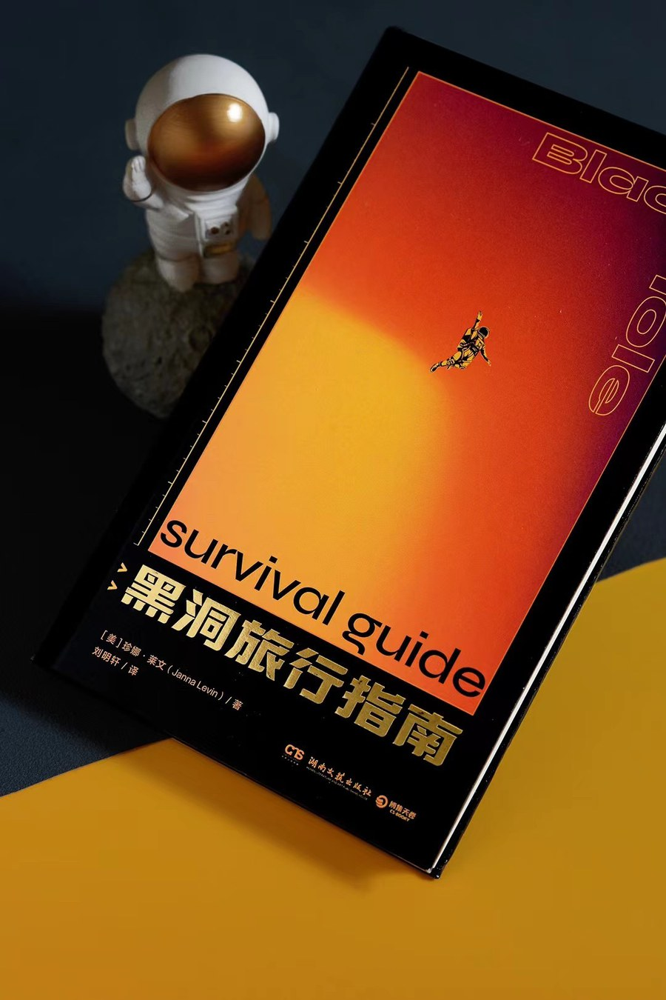
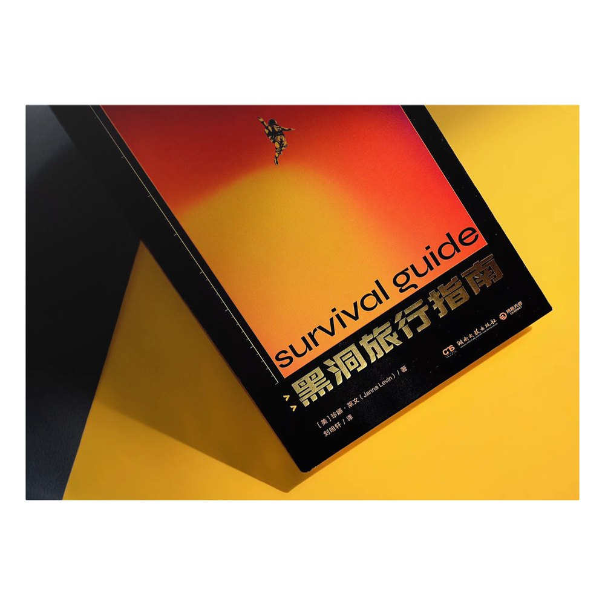
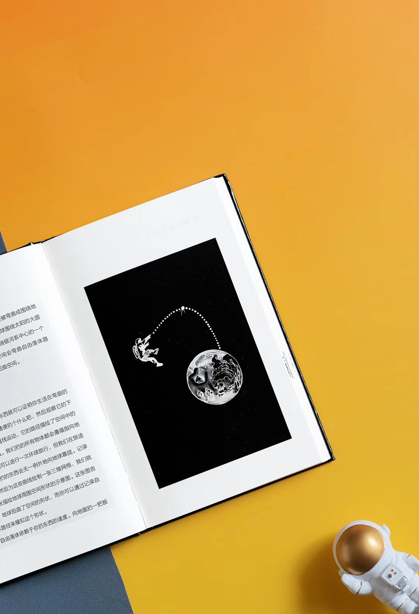

Teaching and outreach
I teach the introductory astronomy courses at Michigan, and I translated a popular science book into Chinese as an undergraduate.
Teaching
Graduate Student Instructor in the Department of Astronomy. Sections, lab and observing, office hours.
ASTRO 201 — Introduction to Astrophysics
Graduate Student Instructor
The department’s core physics-based introduction: stellar lives and deaths, supernovae, black holes and neutron stars, the Milky Way, galaxies, dark matter and cosmology. I do not give the lectures. I run the lab sections, grade the problem sets and lab reports, hold office hours, and lead the after-dark observing session with the telescopes on Angell Hall.
Fall 2025
ASTRO 101 — Introductory Astronomy: The Solar System and the Search for a New Earth
Graduate Student Instructor · two terms
A first course for non-science concentrators, built around what space exploration has actually found: orbits and gravitation, light and matter, then the planets, asteroids and comets, the Sun, the origin of the Solar System, and the question of life elsewhere. Includes practical observing and lab work.
《黑洞旅行指南》

In my first year as an undergraduate I translated Black Hole Survival Guide by Janna Levin, who is a professor of physics and astronomy at Barnard College, into Chinese. It came out as 《黑洞旅行指南》 from 湖南文艺出版社 in June 2022.
It is short and it is not a textbook. Levin writes about black holes as places rather than as objects: what one actually is once you stop describing it as a collapsed star, what the fall in would look like, why these things are strange at every mass from stellar to billions of solar masses. The hard part of the translation was keeping that register in Chinese without either flattening the prose or fudging the physics.
It was also the first time I had to explain event horizons, singularities and the holographic principle to readers with no physics background. That turned out to be useful practice for ASTRO 101.

